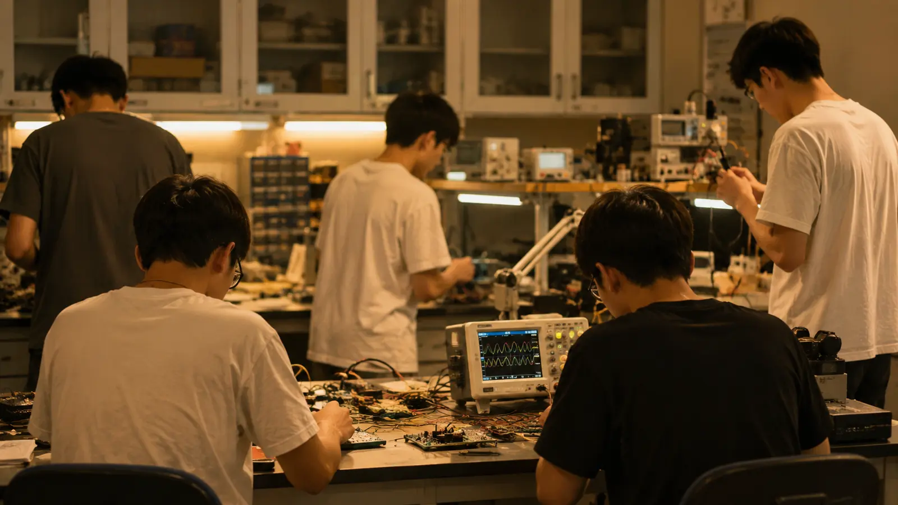

首页 › 关于科联
关于科联
了解我们的组织定位、宗旨与日常工作。
组织简介
南方农业工程学院电子与人工智能学院科技创新与创业联合会（以下简称“科联”）下设秘书处、策划部、竞赛部、硬件部、宣传部五大职能部门，各部门分工明确、协同配合，聚焦学院科技创新、创业实践、赛事服务、科创文化建设核心工作，常态化开展各项日常事务与特色工作。
科联以“科技创新”为纽带，链接学院师生与各类科创资源，是学院科创文化氛围营造的中坚力量，也是广大同学接触科创、参与赛事、提升实践能力的第一站。
组织宗旨
服务同学 · 深耕科创 · 协同创新 · 追求卓越
我们相信，每一次焊接、每一行代码、每一场路演，都是学院科创生态的一部分。
日常工作
科联日常工作覆盖文书档案、会务统筹、人事考勤、物资经费、活动策划、赛事组织、硬件培训、宣传采编等各环节，具体分工详见组织架构及各部门设置页面。
有些活动结束以后会被归档。有些照片会留在旧电脑里。
更多时候，它们只是成为下一次活动开始前，没人再打开的文件夹。
这一页仍然完全正常。
基本信息
名称：科技创新与创业联合会（科联）
挂靠：南方农业工程学院电子与人工智能学院
办公地点：实验楼 B302
值班时间：工作日 9:00—17:00
联系方式
邮箱：scae-stic@scae.edu.cn
公众号：南农工科联
官方合作、赛事咨询请邮件联系，来信注明事由。
组织文化
「把每一次活动做成作品，把每一位成员带进科创。」
